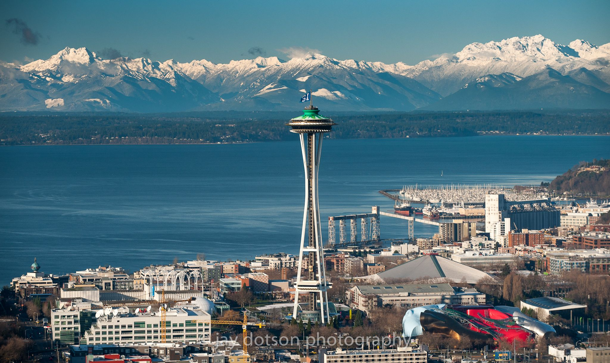
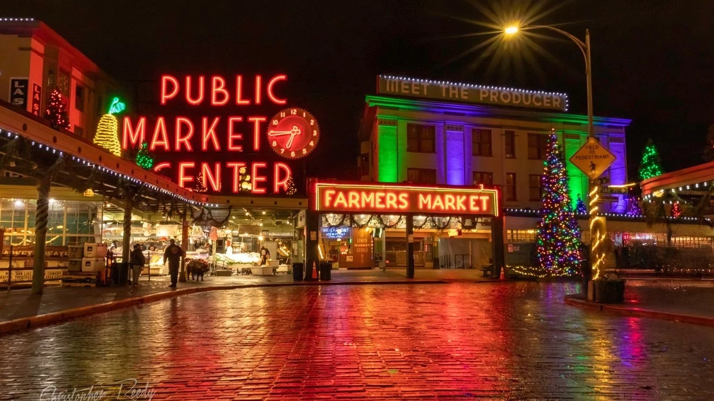

Pacific Northwest · The Evergreen State
Washington State, the central territory of the region known as the Pacific Northwest or Cascadia, remains one of the most fascinatingly diverse, ruggedly wild, and stunningly beautiful areas in the USA and the World. Furthermore, it holds historical importance and tradition as the core of a region distinct from the rest of the USA in culture and industry. Learn the many climate zones, the diverse biology, the unbelievable geology, and the history and geography shaping the region and its people.
Begin ExploringAbout This Project
Washington state has a unique blend of city urban areas only short distances from the incredible beauty and solitude of incredible mountain faces and vast forest landscapes.
However, though the Pacific Northwest is famous for its wet cities and misty forested mountain areas, there is actually much more here than the average weekend tourist or Seattle commuter may ever see. The purpose of this project is to open the eyes of long-time residents and those around the world alike to understand the true stunning complexity of this land.
Learn More
Washington is today mostly well-known only for strong appreciation of nature, an obsession with coffee, and the pioneering tech industry advancements that began and still remain in Seattle.
But there is more to Washington than this modern culture of the urban region. Discover Washington's rich history, from the first settlers to the rise of the logging industry; from Boeing's founding and the hydropower boom to the eruption of Mount St. Helens; from the small beginnings of todays tech giants to the internationally famous explosion of music and culture in the 1990s
Explore History
Research Areas
Explore the depth of the natural of the region
View ResearchUnique ecosystems from rainforests to shrub-steppe.
The rain shadow effect and diverse weather zones.
Volcanic peaks and the scars of the Missoula Floods.